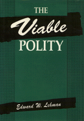

<body bgcolor="#FFFFFF" text="#000000" link="#0000FF" vlink="#CC0000" alink="#CC0000"><center><hr width="350" size="1" align="center" noshade>New criteria for evaluating the interaction of state and society<hr width="350" size="1" align="center" noshade><p><a href="https://cdcshoppingcart.uchicago.edu/Cart/ChicagoBook.aspx?ISBN=9780877229940&&PRESS=temple" target="_top">Buy this book!</a> | <a href="https://cdcshoppingcart.uchicago.edu/Cart/Cart.aspx?PRESS=temple" target="_top">View Cart</a> | <a href="https://cdcshoppingcart.uchicago.edu/Cart/Cart.aspx?PRESS=temple" target="_top">Check Out</a></p><p></p></center><!--none//--><h1>The Viable Polity</h1>
<h3>Edward W. Lehman</h3>
<P>cloth 0-87722-994-5 $66.50, Nov 92, <FONT COLOR=#990033>Out of Stock Unavailable</FONT>
<BR> 296 pp
6x9
</P><BLOCKQUOTE><I>"A well-written, intelligent discussion of an important issue."</I>
<br>&#151<b>Edward Portis</b>, Texas A&M University<I></I></BLOCKQUOTE>
<p>Viewing the rapid changes in our political landscape, Edward W. Lehman observes that understanding political processes has become increasingly critical, and he suggests new criteria for evaluating the interaction of state and society. <I>The Viable Polity</I> challenges the customary ways that political successes and failures have been treated. Lehman concentrates on the fundamental assumptions needed to assess a democratic system's viability and explores the legitimation-crisis paradigm, insisting that we must move beyond its hollow rhetoric.
<p>Lehman then begins the conscious building of the viability paradigm. He contends that political viability must be judged along three interdependent dimensions: a state's capacity to pursue its goals effectively; the polity's ability to elicit citizen participation efficiently; and the possible legitimacy of prevailing political game rules.
<p>Armed with this framework, the author delves into three pivotal anomalies of modern democratic life. First, he considers how enhancing capacities in one sector can actually undermine the overall effectiveness of the state as well as foster inefficient involvement and erode legitimacy. Second, he examines the apparent contradiction implicit in the coexistence of extensive public apathy and widespread moralistic participation in democratic polities. Third, he investigates the circumstances that presently permit high political legitimacy to co-exist with growing distrust of government leaders. Finally, Lehman contrasts the impediments to viability that are unique to the American political system with those that are more widely shared by liberal democracies.
<BR>&nbsp;<h2>Contents</h2><P>
<p>Preface
<br>Introduction: Paradigm Lost
<br>1. Paradigm Regained: Core Elements of an Alternative Approach
<br>2. Predicaments of State Effectiveness
<br>3. Anomalies of Inefficient Participation
<br>4. A Crisis of Political Legitimacy?
<br>5. The End of History&#151The End of the State?
<br>Notes
<br>References
<br>Index
</P><BR>&nbsp;<H2>About the Author(s)</H2>
<P><b>Edward W. Lehman</b> is Professor of Sociology at New York University and author of <I>Political Society: A Macrosociology of Politics</I>.</P>
<BR><H2>Subject Categories</H2>
<p><A HREF="/tempress/political.html" TARGET="_top">Political Science and Public Policy</a>
<BR><A HREF="/tempress/sociology.html" TARGET="_top">Sociology</a>
</p>
<p align="center"><a href="https://cdcshoppingcart.uchicago.edu/Cart/ChicagoBook.aspx?ISBN=9780877229940&&PRESS=temple" target="_top">Buy this book!</a> | <a href="https://cdcshoppingcart.uchicago.edu/Cart/Cart.aspx?PRESS=temple" target="_top">View Cart</a> | <a href="https://cdcshoppingcart.uchicago.edu/Cart/Cart.aspx?PRESS=temple" target="_top">Check Out</a></p><p><font face="Arial" size="1"><a href="copyright.html" onMouseOver="window.status='Web Copyright Policy';return true;" onMouseOut="window.status=''" title="Web Copyright Policy">&copy;</a> 2015 <a href="http://www.temple.edu" target="new" onMouseOver="window.status='Link to Temple University home page';return true;" onMouseOut="window.status=''" title="Link to Temple University home page">Temple University</a>. All Rights Reserved. http://www.temple.edu/tempress/titles/897_reg.html</font></p>